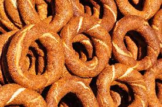
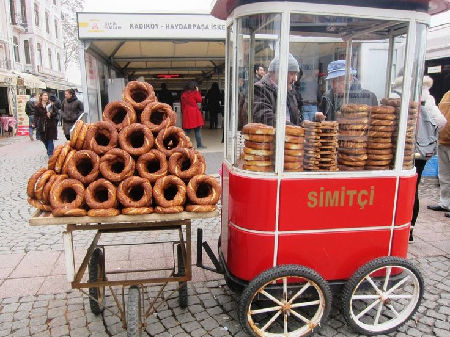
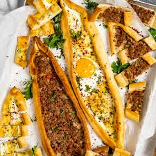
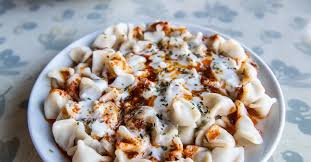

Turkish Cuisine Pastries
Börek
Börek is a baked dish consisting of a savory or sweet filling wrapped in yufka - thinly stretched sheets of dough made with flour, water, and salt. Heartier than phyllo, but thinner than a tortilla, hand-made yufka is typically brushed with butter before baking.
Although many countries have their own versions of this satisfying dish, it was probably invented during the Ottoman Empire in the Anatolian Provinces, an area that nowadays belongs to Türkiye. Some sources suggest that börek might be even older, a descendant of the Eastern Roman (Byzantine) Anatolian dish known as en tyritas plakountas, consisting of layered dough filled with cheese, its recipe dating back to 160 BC.
- Börek Varieties
- Su Böreği (Water Börek, made with thin layers of dough and cheese or meat)
- Rolled Börek (with fillings like minced meat, cheese, or potatoes)
- Fried Meat Pastry (or Raw Börek, though it refers to the cooking method, not being raw)
- Pastrami and Cheese Börek
- Rose-Shaped Börek(shaped like a rose)
Turkish Traditional Hemsin Simit
Step into the world of Turkish culinary heritage with Hemsin Simit, a beloved and timeless classic that holds a special place in the hearts of Turkish people. This traditional Turkish bakery product, often referred to as the Turkish bagel, is more than just a snack—it's a symbol of culture, community, and craftsmanship.
In Turkish Cuisine
In the vibrant tapestry of Turkish cuisine, Hemsin Simit is a star player. Its unique taste and chewy texture make it a versatile and cherished treat. Here's how it features in Turkish culinary traditions:

Street Vendor Delight
Strolling through the bustling streets of Türkiye, you'll encounter street vendors peddling Hemsin Simit, often presented on large trays or carried on their heads. It's a popular street food enjoyed by people of all ages. The golden-brown, sesame-crusted exterior gives way to a soft, fluffy interior, making it a delightful on-the-go snack.
Lahmacun

Lahmacun is a traditional Turkish dish with a history rooted in the Levant and Mesopotamia. Its name comes from the Arabic term "lahm bi'ajin", meaning "meat with dough." The dish consists of a thin flatbread topped with minced meat, vegetables, and spices, then baked until crispy.
Lahmacun is commonly served with lemon, fresh herbs, and sometimes pickles, making it a popular street food or appetizer in Türkiye and beyond. Its flavorful combination has made it a beloved part of Turkish cuisine.

Pide
Pide is a Turkish dish similar to pizza, made with soft dough topped with ingredients like minced meat, cheese, or spinach, and baked until crispy. It has roots in Anatolian cuisine and became popular during the Seljuk and Ottoman periods.
Pide is enjoyed in various regional variations across Türkiye, with each area offering its own unique twist on the toppings. Some popular versions include "kiymali pide" (minced meat), "kasarli pide" (cheese), and "yumurtali pide" (egg). It's often served as a main meal, accompanied by a side of fresh salad, yogurt, or a glass of traditional Turkish tea. The combination of soft dough and flavorful toppings makes pide a beloved comfort food enjoyed by many.
Mantı
Mantı is a traditional Turkish dish made of small dumplings filled with minced meat, usually beef or lamb, and seasoned with spices. The dough is rolled thin, cut into squares, filled with meat, and then boiled or steamed. It is typically served with garlic yogurt and melted butter or tomato sauce.
Originating from Central Asia, mantı was introduced by the Turks and spread across the region, evolving in various ways. In Türkiye, it is especially popular in Kayseri, where it is made smaller and more delicate. The dish is a symbol of family and tradition, often prepared and enjoyed together during special occasions.